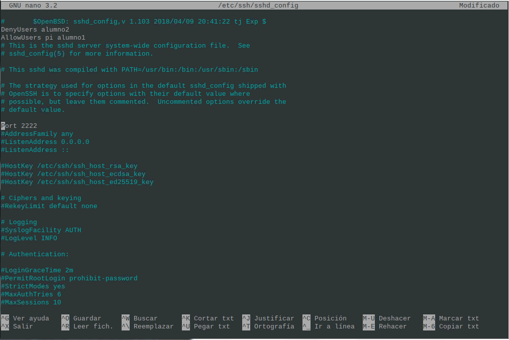

PASO 1
Instalar servidor SSH en linux y comprobar que se escucha el puerto 22.
sudo nmap -sU --top-ports 1000 scanme.nmap.org

PASO 2
Crear dos usuarios denominados usuario1 y usuario2.
sudo useradd -m -d /home/alumno1 alumno1 -s /bin/bash

PASO 3
Comprobar que podemso acceder mendiante ssh a estos usuarios.
ssh alumno1@192.168.18.210

PASO 4
Cambiar de puerto del servidor e intentar acceder de nuevo
Port 2222
PASO 5.1
Cambiar configuracion del servidor para acceder con el usr1 y no con el usr2
AllowUsers alumno2 , DenyUsers alumno2

PASO 5.2
Comprobar el acceso
ssh alumno2@192.168.18.210

PASO 6
Cambiar la configuracion para que solo pueda acceder una IP determinada.
AllowIP 192.168.18.247

PASO 7
Comprobar en Wireshark que los paquetes estas encriptados
Va encriptado